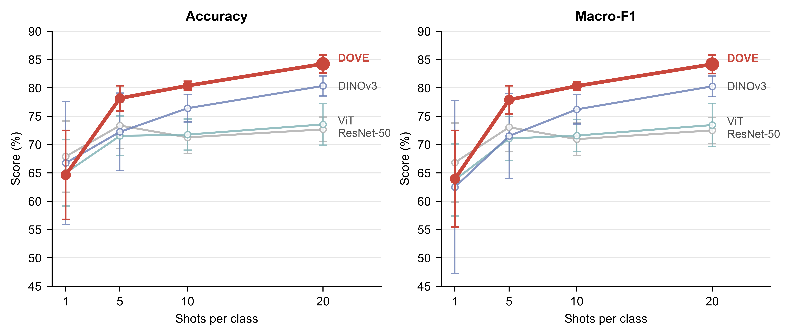
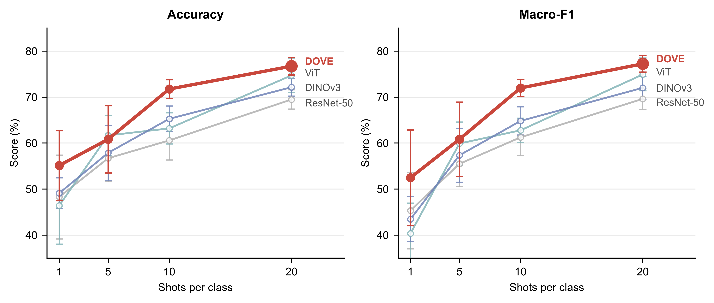
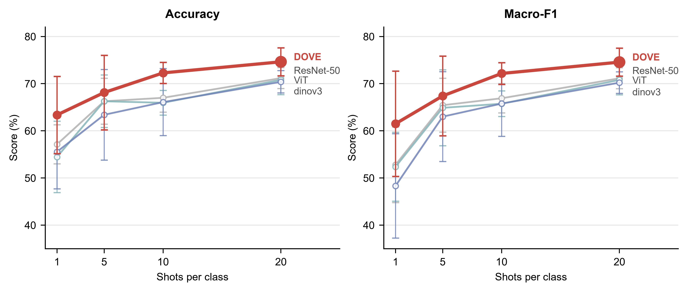
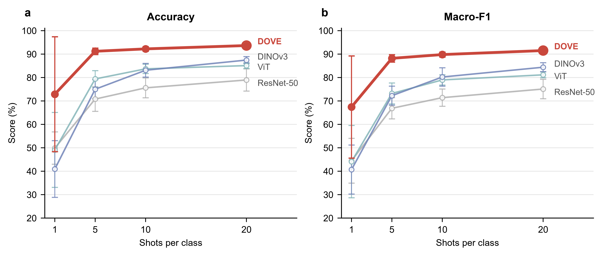
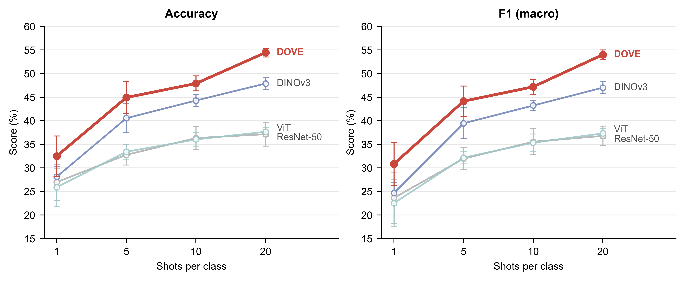
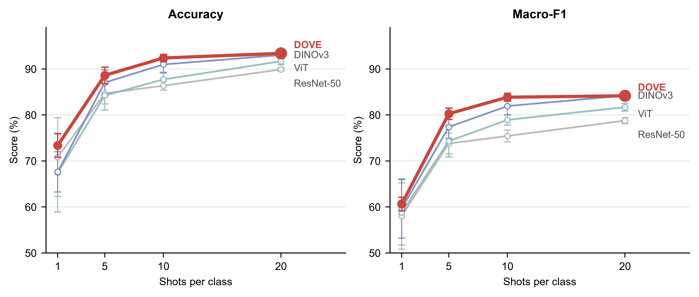
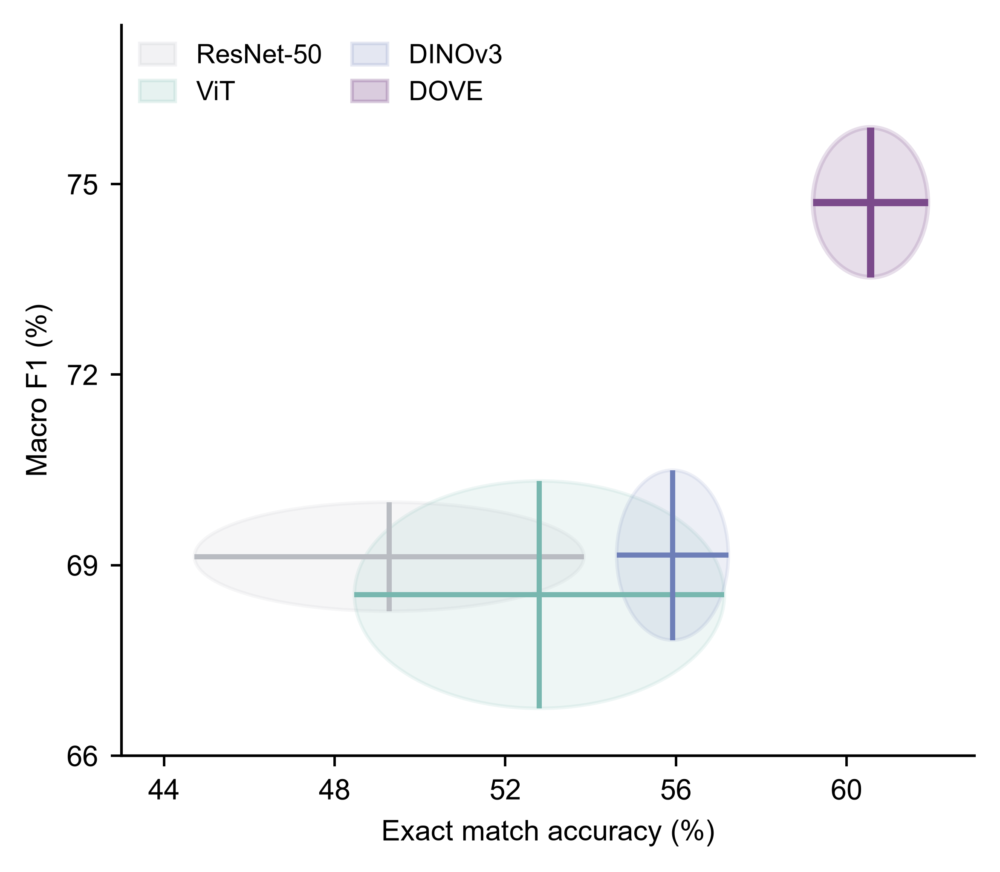
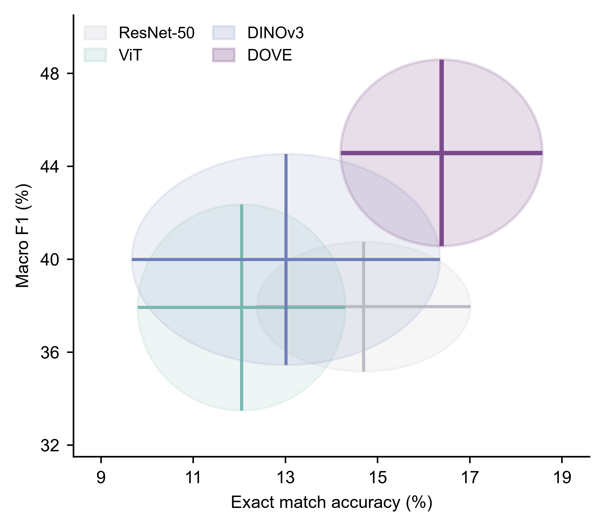

Dataset 01
ORAL CANCER
- Classes
- 2
- Images
- 950
This dataset, comprises 500 oral cancer images and 450 non-cancer oral images.

Frozen-representation evaluation across single-label and multi-label oral photography benchmarks.
Frozen DOVE encoder → image embeddings → L2 normalization → cosine 1-NN classifier
This dataset, comprises 500 oral cancer images and 450 non-cancer oral images.

The dataset comprises 2000 original JPG images across three categories: Advanced Enamel Caries (n=800), Early Stage Enamel Caries (n=800), and No Enamel Caries (n=400).

The dataset contains images of 165 benign lesions and 158 malignant lesions.

The dataset contains 6,613 images of calculus, hypodontia and ulcer

The dataset comprises 1,348 intraoral mucosal images categorized into five classes: normal oral mucosa, oral leukoplakia, oral lichen planus, oral submucous fibrosis, and oral cancer.

The dataset comprises nine distinct intraoral photographic views, including frontal occlusal views, mandibular occlusal views, maxillary occlusal views, lateral occlusal views, maxillary anterior views, mandibular anterior views, frontal open-mouth views, facial photographs, and lower facial third photographs.

Frozen DOVE encoder → linear probe classifier
The dataset consists of 2495 images with 28904 labeled objects belonging to 4 different classes including tooth, caries, cavity, and other: crack.

It contains 1,320 high-resolution DSLR photographs acquired using a Canon 6D Mark II camera and a 100-mm macro lens. Dentist-annotated instance masks are provided for nine categories: abrasion, fillings, crowns, and six classes of dental caries
